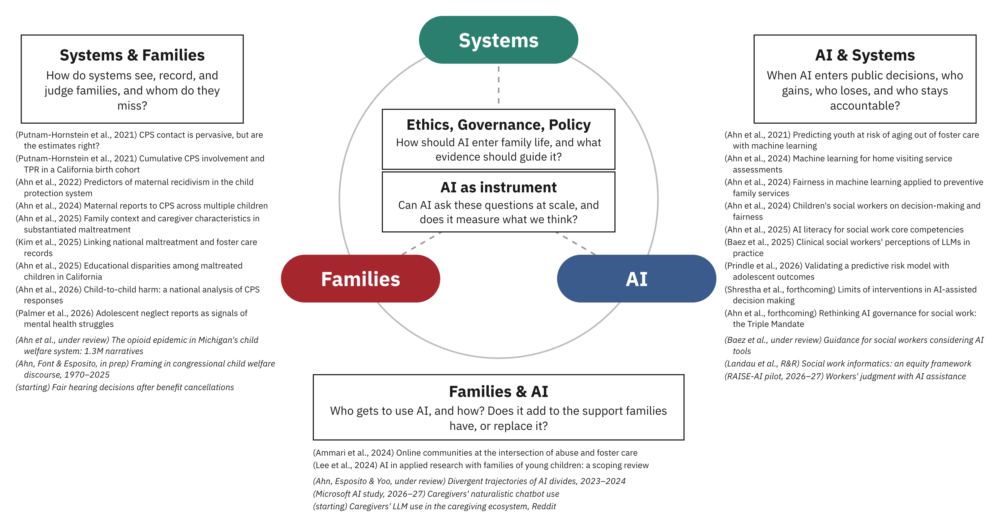

Eunhye Ahn, PhD, MSW
University of Wisconsin-Madison
About
I am an Assistant Professor in the Department of Human Development and Family Studies, with a secondary appointment in Consumer Science, at the School of Human Ecology, University of Wisconsin-Madison. I received my PhD in social work from the University of Southern California, my master's degree in social work from Monash University in Australia, and my bachelor's degree in business administration from Yonsei University in South Korea.
Research
How does AI reshape inequality among families — in their individual lives, within family relationships, and through the systems that serve them — and how can we understand and govern it?
Human-centered AI through a human ecology lens
AI is entering family life from two directions. Public systems use it to decide which families are investigated, who qualifies for support, and whose benefits continue. Families are beginning to use it themselves: to make sense of those decisions, find help, and navigate care. Either can widen or narrow the gap between families with resources and those without. My research asks which, for whom, and what should be done about it. I approach this as a computational social scientist trained in social work, with a decade of population-level research on child and family service systems using linked administrative data.

How I Became a Data Scientist
I'm often asked how I became a data scientist without a computer science background. In 2015, I began exploring whether I could contribute to both social work and computer science by learning data science. I participated in the Melbourne Datathon in 2016 and connected with computational social science faculty at Monash University.
During my MSW program, I taught myself introductory data science through online courses on Coursera, MIT OpenCourseWare, and iTunesU — covering probability, linear algebra, R programming, and machine learning. I continued with data science electives during my doctoral training, including computational thinking, informatics, and ML for health sciences.
In 2019, I was accepted into the Data Science for Social Good Fellowship at Imperial College London — the only social work student accepted in the program's seven-year history. That training, combined with years of self-directed learning, became the foundation for applying data science to my qualifying exam and dissertation on ML fairness in child welfare.
Selected Publications
- Ahn, E. (2025). Who is the Human in Human-Centered AI? AI & Society. doi · 한국어 번역
- Ahn, E., Choi, M., Fowler, P., & Song, I. (2025). Artificial Intelligence (AI) Literacy for Social Work: Implications for Core Competencies. Journal of Society for Social Work Research. doi
- Ahn, E., Tejeda, Y., & Yang, Y. (2024). Examining Fairness in Machine Learning Applied to Support Families. Family Relations. doi
- Ahn, E., An, R., Jonson-Reid, M., & Palmer, L. (2024). Leveraging Machine Learning for Effective Child Maltreatment Prevention. Child Abuse & Neglect. doi
- Ahn, E., Gil, Y., & Putnam-Hornstein, E. (2021). Predicting Youth at High Risk of Aging Out of Foster Care Using Machine Learning Methods. Child Abuse & Neglect. doi
Full list on Google Scholar or in my CV.